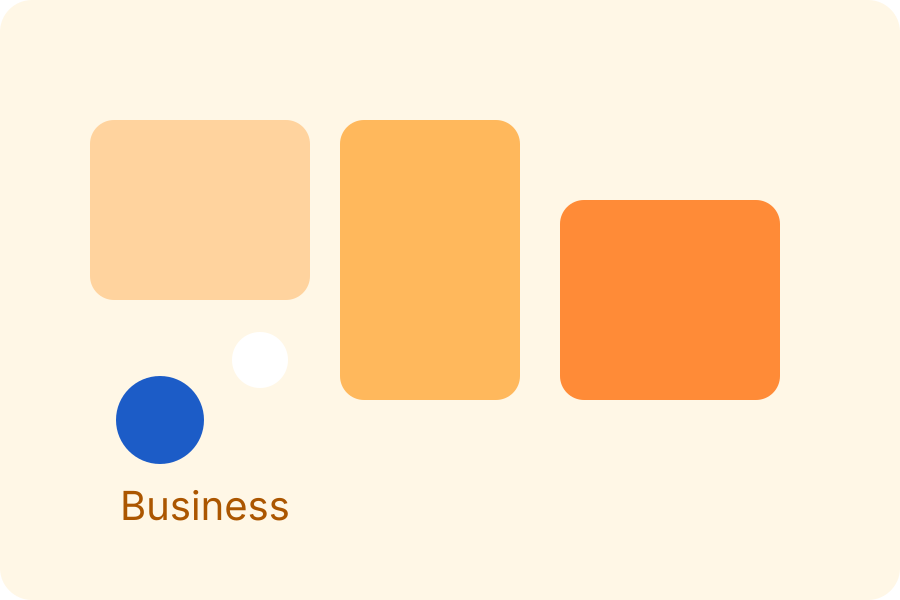

Politics
Zoning Headache for Broad-Based Government, United Opposition
Political leaders seek an inclusive coalition formula while balancing regional power ahead of 2027.
Read StoryKenya Bloomberg
As the Judicial Service Commission interviews top candidates, the country watches for signs of judicial independence and legal stability.
Political leaders seek an inclusive coalition formula while balancing regional power ahead of 2027.
Read Story
Export demand is driving growth, but producers still face water and transport challenges.
Read StoryKenya's athletics dominance continues with a record-breaking London Marathon performance.
Read StoryReal-time coverage of politics, markets, sports and community stories from Kenya.
+18% forecast for 2026
22-month low amid drought
67% of urban transactions
Sh5.5bn clean cooking fund
Kenya reclaims its place at the top of distance running with a historic London finish.
New discipline rules are reshaping local football culture and coaching behavior.
How mobile money and renewable energy projects are creating a more resilient economy for Kenyan businesses and cities.
Read Opinion